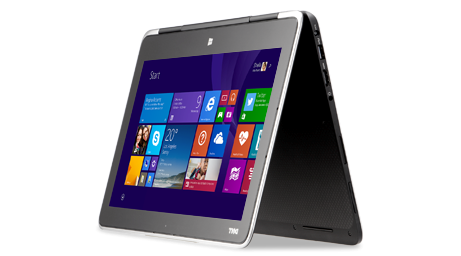
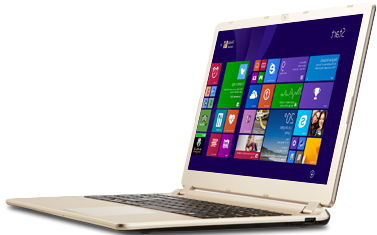
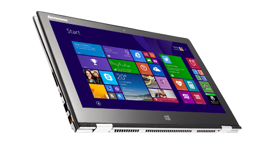
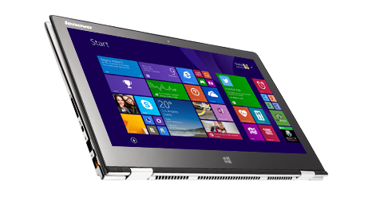

DWENNIEP Website Tutorial
Making our first page
It is possible to make websites using these extremely simple tools. This is great news as it means everyone can learn to make websites.
For now we only have a simple page, but later we will make it more complex and interesting.
What have we learned so far?
So far we have learned a few simple tags for placing text onto a page. The internet is a network of computers which spans the entire world. The internet is a decentralized network – in other words, every computer connected to it is treated the same. There are no special internet servers which control the whole internet, but some servers have a special role which we will discuss in later lessons. Computers which have content that people want to access are often called ‘servers’ because they serve up that content to other computers. In practice, the internet is made up of many (many!) computers all around the world connected together by dedicated infrastructure. It is impossible to know exactly how many computers there are on the internet, but it is estimated there were more than 100,000,000 servers online by 2013. Imagine huge rooms filled with computers, joined by cables that cover every country and go under every ocean – that is what the internet is like physically! It doesn’t matter to us where the computers are or how we are connected to them – once you’re connected to the internet you can talk to any of the other computers.
- computer note
- website building
- learning html  
 
